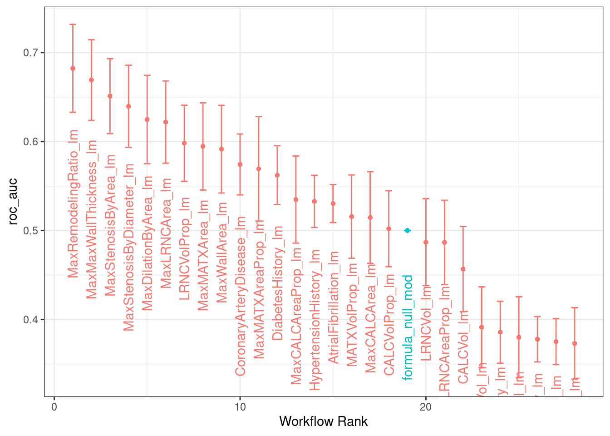
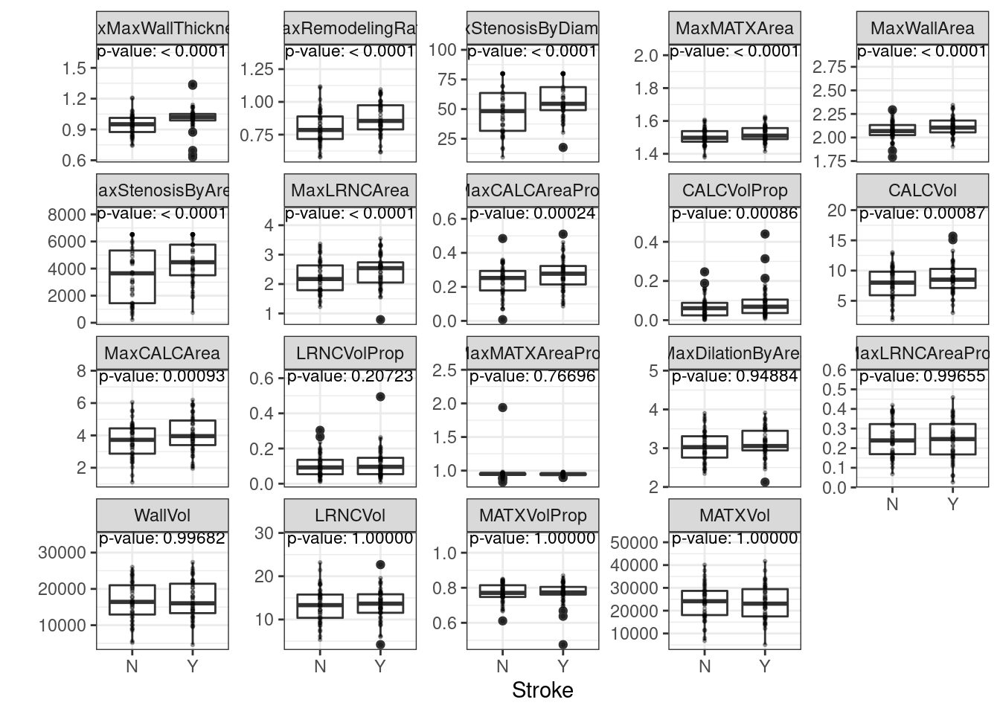
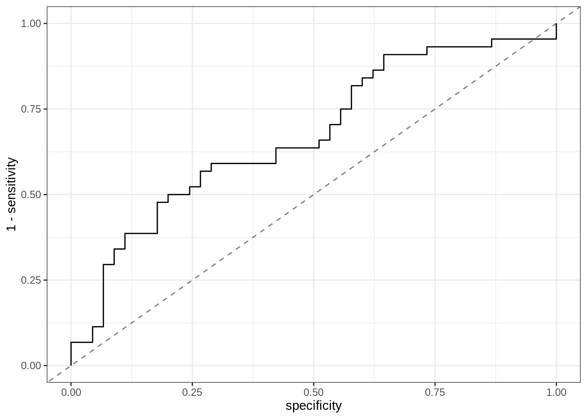
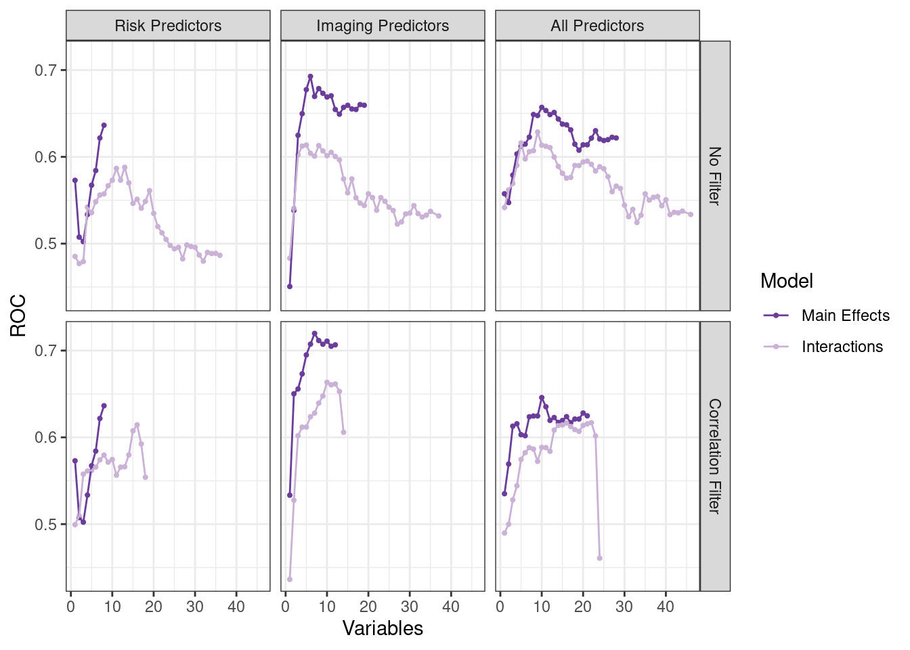

2.3 Example 2
Code for Section 2.4 at https://bookdown.org/max/FES/stroke-tour.html#stroke-exploration
Code to compare 2-way interaction models to their main effects model
a and b are two models from train()
compare_models_1way <- function(a, b, metric = a$metric[1], ...) {
mods <- list(a, b)
rs <- resamples(mods)
diffs <- diff(rs, metric = metric[1], ...)
diffs$statistics[[1]][[1]]
}risk_preds is contained in the original data file and has the predictor
names for the risk related variables
2.3.1 Create a “null model” with no predictors to get baseline performance
Compare the models with single predictors to the risk model. These data make
https://bookdown.org/max/FES/stroke-tour.html#tab:stroke-strokeRiskAssociations
VC_preds and risk_preds contain the predictor names for different sets.
one_predictor_res <-
data.frame(Predictor = c(VC_preds, risk_preds),
Improvement = NA,
Pvalue = NA,
ROC = NA,
stringsAsFactors = FALSE)
for (i in 1:nrow(one_predictor_res)) {
set.seed(63331)
var_mod <- train(Stroke ~ .,
data = stroke_train[, c("Stroke", one_predictor_res$Predictor[i])],
method = "glm",
metric = "ROC",
trControl = ctrl)
tmp_diff <- compare_models_1way(var_mod,
null_mod,
alternative = "greater")
one_predictor_res$ROC[i] <- getTrainPerf(var_mod)[1, "TrainROC"]
one_predictor_res$Improvement[i] <- tmp_diff$estimate
one_predictor_res$Pvalue[i] <- tmp_diff$p.value
}2.3.2 With Tidymodels
attempting this with tidymodels, not exactly the same need to make some sort of resample object to feed workflow_map
model_folds <- vfold_cv(tidy_training, v = 10, repeats = 5)
# model_boots <- bootstraps(tidy_training, times = 50) #want to bootstrap this?
#defining the null model
null_class_model <-
null_model() %>%
set_engine("parsnip") %>%
set_mode("classification")
null_model <- workflow_set(preproc = c(Stroke ~ .),
models = list(null_mod = null_class_model))# defining the model
lm_model <-
logistic_reg(
mode = "classification", # outcome is a classification Stroke Y/N
engine = "glm", #using glm like the example
penalty = NULL,
mixture = NULL
)# make named list of single variable formulae
single_var_formulae <-
c(VC_preds, risk_preds) %>%
paste0("Stroke ~ ", .) %>%
set_names(., c(VC_preds, risk_preds)) %>%
as.list() %>%
map(., as.formula)Create the workflow set, all of our models use the same type of model and input data
single_var_models <- workflow_set(preproc = single_var_formulae,
models = list(lm = lm_model))
all_models <- bind_rows(null_model, single_var_models)
# control grid/resamples allow processing of resampled data and parallel processing
# here we are asking only to save the predictions
control <- control_resamples(save_pred = TRUE)doParallel::registerDoParallel()
all_models1 <-
all_models %>%
#map over each model and its resamples, use the control parameters, and be noisy
workflow_map(.,
resamples = model_folds,
control = control,
verbose = TRUE)
# save(all_models1, file = "data/all_models1.RData", compress = "xz")# per model what are the predictions, summmarize over resamples
collect_predictions(all_models1, summarize = TRUE)## # A tibble: 2,492 × 9
## wflow_id .config preproc model .row Stroke .pred_N .pred_Y .pred…¹
## <chr> <fct> <chr> <chr> <int> <fct> <dbl> <dbl> <fct>
## 1 formula_null_mod Preproce… formula null… 1 N 0.495 0.505 Y
## 2 formula_null_mod Preproce… formula null… 2 N 0.478 0.522 Y
## 3 formula_null_mod Preproce… formula null… 3 N 0.495 0.505 Y
## 4 formula_null_mod Preproce… formula null… 4 N 0.475 0.525 Y
## 5 formula_null_mod Preproce… formula null… 5 N 0.485 0.515 Y
## 6 formula_null_mod Preproce… formula null… 6 N 0.498 0.502 Y
## 7 formula_null_mod Preproce… formula null… 7 N 0.488 0.512 Y
## 8 formula_null_mod Preproce… formula null… 8 N 0.485 0.515 Y
## 9 formula_null_mod Preproce… formula null… 9 N 0.491 0.509 Y
## 10 formula_null_mod Preproce… formula null… 10 N 0.482 0.518 Y
## # … with 2,482 more rows, and abbreviated variable name ¹.pred_class# per model what are the outputs in terms of fit (auc_roc) and accuracy
collect_metrics(all_models1)## # A tibble: 56 × 9
## wflow_id .config preproc model .metric .esti…¹ mean n std_err
## <chr> <fct> <chr> <chr> <chr> <chr> <dbl> <int> <dbl>
## 1 formula_null_mod Preproces… formula null… accura… binary 0.378 50 0.0131
## 2 formula_null_mod Preproces… formula null… roc_auc binary 0.5 50 0
## 3 CALCVol_lm Preproces… formula logi… accura… binary 0.388 50 0.0183
## 4 CALCVol_lm Preproces… formula logi… roc_auc binary 0.457 50 0.0291
## 5 CALCVolProp_lm Preproces… formula logi… accura… binary 0.441 50 0.0196
## 6 CALCVolProp_lm Preproces… formula logi… roc_auc binary 0.502 50 0.0260
## 7 MATXVol_lm Preproces… formula logi… accura… binary 0.346 50 0.0177
## 8 MATXVol_lm Preproces… formula logi… roc_auc binary 0.380 50 0.0277
## 9 MATXVolProp_lm Preproces… formula logi… accura… binary 0.415 50 0.0222
## 10 MATXVolProp_lm Preproces… formula logi… roc_auc binary 0.516 50 0.0285
## # … with 46 more rows, and abbreviated variable name ¹.estimator# plot the output to show which individual parameters have the most impact
autoplot(
all_models1,
rank_metric = "roc_auc", # <- how to order models
metric = "roc_auc", # <- which metric to visualize
select_best = FALSE # <- one point per workflow
) +
geom_text(aes(y = mean - 1/10*mean,
label = wflow_id),
angle = 90, hjust = 1) +
theme(legend.position = "none")
# per model, sort by auc_roc
all_models1 %>%
rank_results() %>%
filter(.metric == "roc_auc")## # A tibble: 28 × 9
## wflow_id .config .metric mean std_err n prepr…¹ model rank
## <chr> <fct> <chr> <dbl> <dbl> <int> <chr> <chr> <int>
## 1 MaxRemodelingRatio_lm Prepro… roc_auc 0.682 0.0300 50 formula logi… 1
## 2 MaxMaxWallThickness_… Prepro… roc_auc 0.669 0.0276 50 formula logi… 2
## 3 MaxStenosisByArea_lm Prepro… roc_auc 0.651 0.0256 50 formula logi… 3
## 4 MaxStenosisByDiamete… Prepro… roc_auc 0.640 0.0281 50 formula logi… 4
## 5 MaxDilationByArea_lm Prepro… roc_auc 0.625 0.0302 50 formula logi… 5
## 6 MaxLRNCArea_lm Prepro… roc_auc 0.622 0.0281 50 formula logi… 6
## 7 LRNCVolProp_lm Prepro… roc_auc 0.598 0.0260 50 formula logi… 7
## 8 MaxMATXArea_lm Prepro… roc_auc 0.595 0.0298 50 formula logi… 8
## 9 MaxWallArea_lm Prepro… roc_auc 0.591 0.0300 50 formula logi… 9
## 10 CoronaryArteryDiseas… Prepro… roc_auc 0.574 0.0208 50 formula logi… 10
## # … with 18 more rows, and abbreviated variable name ¹preprocessor# Data in table 2.3
# https://bookdown.org/max/FES/stroke-tour.html#tab:stroke-strokeRiskAssociations
one_predictor_res %>%
dplyr::filter(Predictor %in% risk_preds) %>%
arrange(Pvalue)## Predictor Improvement Pvalue ROC
## 1 CoronaryArteryDisease 0.079000 0.0002957741 0.579000
## 2 DiabetesHistory 0.066500 0.0003019908 0.566500
## 3 HypertensionHistory 0.065000 0.0004269919 0.565000
## 4 age 0.083375 0.0010729715 0.583375
## 5 AtrialFibrillation 0.044000 0.0013131334 0.544000
## 6 SmokingHistory -0.009500 0.6520765973 0.490500
## 7 sex -0.034500 0.9287682162 0.465500
## 8 HypercholesterolemiaHistory -0.101500 0.9999999044 0.398500# Figure 2.4
# https://bookdown.org/max/FES/stroke-tour.html#fig:stroke-vascuCAPAssocations
vc_pred <-
recipe(Stroke ~ ., data = stroke_train %>% dplyr::select(Stroke, !!!VC_preds)) %>%
step_YeoJohnson(all_predictors()) %>%
prep(stroke_train %>% dplyr::select(Stroke, !!!VC_preds)) %>%
bake(., new_data = NULL) %>%
gather(Predictor, value, -Stroke)
vc_pred%>%head## # A tibble: 6 × 3
## Stroke Predictor value
## <fct> <chr> <dbl>
## 1 N CALCVol 9.51
## 2 N CALCVol 4.90
## 3 N CALCVol 7.63
## 4 Y CALCVol 13.2
## 5 N CALCVol 6.93
## 6 N CALCVol 2.27pred_max <-
vc_pred %>%
group_by(Predictor) %>%
summarize(max_val = max(value)) %>%
inner_join(one_predictor_res %>% dplyr::select(Pvalue, Predictor)) %>%
mutate(
x = 1.5,
value = 1.25 * max_val,
label = paste0("p-value: ", format.pval(Pvalue, digits = 2, sci = FALSE, eps = .0001))
)## Joining, by = "Predictor"pred_max%>%head## # A tibble: 6 × 6
## Predictor max_val Pvalue x value label
## <chr> <dbl> <dbl> <dbl> <dbl> <chr>
## 1 CALCVol 15.7 0.000872 1.5 19.6 p-value: 0.00087
## 2 CALCVolProp 0.440 0.000856 1.5 0.550 p-value: 0.00086
## 3 LRNCVol 23.2 1.00 1.5 29.0 p-value: 1.00000
## 4 LRNCVolProp 0.495 0.207 1.5 0.618 p-value: 0.20723
## 5 MATXVol 41681. 1.00 1.5 52101. p-value: 1.00000
## 6 MATXVolProp 0.870 1.00 1.5 1.09 p-value: 1.00000new_order <- pred_max$Predictor[order(pred_max$Pvalue)]
vc_pred <-
vc_pred %>%
mutate(Predictor = factor(Predictor, levels = new_order))
pred_max <-
pred_max %>%
mutate(Predictor = factor(Predictor, levels = new_order))
fig_2_4 <-
ggplot(vc_pred, aes(x = Stroke, y = value)) +
geom_boxplot() +
geom_point(alpha = 0.3, cex = .5) +
geom_text(data = pred_max, aes(x = x, label = label), size = 3) +
facet_wrap(~Predictor, scales = "free_y") +
ylab("")
fig_2_4
# Figure 2.5
# https://bookdown.org/max/FES/stroke-tour.html#fig:stroke-maxRemodelingRatioROC
fig_2_5 <-
roc_curve(stroke_train, Stroke, MaxRemodelingRatio) %>%
# used opposite values
ggplot(aes(x = specificity, y = 1-sensitivity)) +
geom_abline(alpha = .5, lty = 2) +
geom_path()
fig_2_5
2.3.3 Interaction exploration
Here they create all the pairs of all of the image analysis components there are 171 interactions
pairs <-
combn(VC_preds, 2) %>%
t() %>%
as.data.frame(stringsAsFactors = FALSE) %>%
mutate(
Improvement = NA,
Pvalue = NA,
ROC = NA
)Run comparisons with caret
retained_pairs <-
pairs1 %>%
dplyr::filter(ROC > 0.5 & Pvalue <= 0.2)
retained_pairs%>%head## V1 V2 Improvement Pvalue ROC
## 1 MATXVol MaxMaxWallThickness 0.07635 0.001903838 0.65435
## 2 MATXVol MaxRemodelingRatio 0.11085 0.001345363 0.55150
## 3 MATXVol MaxStenosisByArea 0.02325 0.086210254 0.60960
## 4 MATXVol MaxStenosisByDiameter 0.01930 0.197228736 0.61550
## 5 LRNCVol MaxMATXArea 0.02590 0.152003535 0.55690
## 6 LRNCVol MaxRemodelingRatio 0.03345 0.119774508 0.59510# Figure 2.6
# https://bookdown.org/max/FES/stroke-tour.html#fig:stroke-interactionScreening
vol_plot <-
pairs1 %>%
dplyr::filter(ROC > 0.5) %>%
mutate(Term = paste(V1, "by", V2, "\nROC:", round(ROC, 2))) %>%
ggplot(aes(x = Improvement, y = -log10(Pvalue))) +
xlab("Improvement") +
geom_point(alpha = .2, aes(size = ROC, text = Term))
vol_plot <- ggplotly(vol_plot, tooltip = "Term")
vol_plotCreate interaction formula of things that matter most
int_form <-
pairs1 %>%
dplyr::filter(ROC > 0.5 & Pvalue <= 0.2 & Improvement > 0) %>%
mutate(form = paste0(V1, ":", V2)) %>%
pull(form) %>%
paste(collapse = "+")
int_form <- paste("~", int_form)
int_form <- as.formula(int_form)
int_form%>%head## ~MATXVol:MaxMaxWallThickness + MATXVol:MaxRemodelingRatio + MATXVol:MaxStenosisByArea +
## MATXVol:MaxStenosisByDiameter + LRNCVol:MaxMATXArea + LRNCVol:MaxRemodelingRatio +
## MaxCALCAreaProp:MaxMATXAreaProp + MaxCALCAreaProp:MaxRemodelingRatio +
## MaxDilationByArea:MaxMaxWallThickness + MaxDilationByArea:MaxRemodelingRatio +
## MaxMATXAreaProp:MaxLRNCArea + MaxMATXAreaProp:MaxRemodelingRatio +
## MaxMATXAreaProp:MaxWallArea + MaxMaxWallThickness:MaxStenosisByArea +
## MaxMaxWallThickness:WallVol + MaxRemodelingRatio:MaxWallArea +
## MaxRemodelingRatio:WallVol + MaxStenosisByArea:WallVolThis part of the script is to work through all of of the potential models:
- original risk set alone
- imaging predictors alone
- risk and imaging predictors together
- imaging predictors and interactions of imaging predictors, and
- risk, imaging predictors, and interactions of imaging predictors
All the models are run below.
risk_train <-
stroke_train %>%
dplyr::select(one_of(risk_preds), Stroke)
risk_train%>%head## age sex SmokingHistory AtrialFibrillation CoronaryArteryDisease
## 1 72 1 1 0 0
## 2 76 1 1 0 0
## 4 72 0 0 0 0
## 5 61 1 1 0 0
## 7 65 1 0 0 0
## 8 64 1 1 0 1
## DiabetesHistory HypercholesterolemiaHistory HypertensionHistory Stroke
## 1 0 0 1 N
## 2 1 1 1 N
## 4 0 0 0 N
## 5 1 1 1 Y
## 7 0 0 1 N
## 8 0 1 1 Nimage_train <-
stroke_train %>%
dplyr::select(one_of(VC_preds), Stroke)
image_train%>%head## CALCVol CALCVolProp MATXVol MATXVolProp LRNCVol LRNCVolProp MaxCALCArea
## 1 235.252599 0.070442702 3156.835 0.7599582 224.87171 0.09108513 12.350494
## 2 31.433595 0.016164769 3032.861 0.8133063 368.56066 0.13398944 7.130660
## 4 113.404823 0.038081488 3835.220 0.7825256 321.15893 0.08303659 16.286916
## 5 780.823789 0.213432061 3518.877 0.7610895 140.51735 0.03206536 63.350869
## 7 84.055774 0.041383842 2990.273 0.7498691 293.26992 0.07539753 17.583561
## 8 5.644322 0.002824946 3359.323 0.8492801 55.76888 0.01983567 2.841252
## MaxCALCAreaProp MaxDilationByArea MaxMATXArea MaxMATXAreaProp MaxLRNCArea
## 1 0.36576842 520.98259 71.24743 0.9523705 21.686815
## 2 0.21124686 91.72005 27.21084 0.9455539 6.434661
## 4 0.40881121 270.96930 38.12211 0.9459098 5.705054
## 5 0.57620574 2270.45120 341.12089 0.9691989 6.046787
## 7 0.32150685 95.15505 56.57457 0.9213197 7.213451
## 8 0.07734609 298.42121 33.92709 0.9612049 4.595196
## MaxLRNCAreaProp MaxMaxWallThickness MaxRemodelingRatio MaxStenosisByArea
## 1 0.4295781 2.409943 5.697931 18.99554
## 2 0.2815101 2.540334 1.739927 30.23761
## 4 0.1547786 3.708515 2.831636 33.93906
## 5 0.1870965 6.115838 15.647750 34.30985
## 7 0.2169263 3.975168 1.912069 36.59954
## 8 0.2053274 2.581908 2.181675 40.31766
## MaxWallArea WallVol MaxStenosisByDiameter Stroke
## 1 106.20676 4192.170 10.54411 N
## 2 33.36714 3917.040 18.64620 N
## 4 55.34671 4935.327 19.73511 N
## 5 426.47858 4909.504 20.28832 Y
## 7 59.82696 4045.053 49.29705 N
## 8 34.79742 3960.832 30.50857 NfiveStats <- function(...) c(twoClassSummary(...), defaultSummary(...))
internal_ctrl = trainControl(method = "none", classProbs = TRUE,
allowParallel = FALSE)
lrFuncsNew <- caretFuncs
lrFuncsNew$summary <- fiveStats
rfeCtrl <- rfeControl(functions = lrFuncsNew,
method = "repeatedcv",
repeats = 5,
rerank = FALSE,
returnResamp = "all",
saveDetails = TRUE,
verbose = FALSE)RFE procedure using risk predictors
All pair-wise interactions.
risk_int_filtered_recipe <-
recipe(Stroke ~ ., data = risk_train) %>%
step_interact(~ all_predictors():all_predictors()) %>%
step_corr(all_predictors(), threshold = 0.75) %>%
step_center(all_predictors()) %>%
step_scale(all_predictors()) %>%
step_zv(all_predictors())set.seed(63331)
risk_int_filtered_rfe <- rfe(
risk_int_filtered_recipe,
data = risk_train,
sizes = 1:36,
rfeControl = rfeCtrl,
metric = "ROC",
## train options
method = "glm",
trControl = internal_ctrl
)# Main effects
risk_main_filtered_recipe <-
recipe(Stroke ~ ., data = risk_train) %>%
step_corr(all_predictors(), threshold = 0.75) %>%
step_center(all_predictors()) %>%
step_scale(all_predictors()) %>%
step_zv(all_predictors())
set.seed(63331)
risk_main_filtered_rfe <- rfe(
risk_main_filtered_recipe,
data = risk_train,
sizes = 1:8,
rfeControl = rfeCtrl,
metric = "ROC",
## train options
method = "glm",
trControl = internal_ctrl
)RFE procedure using imaging predictors.
img_int_filtered_recipe <-
recipe(Stroke ~ ., data = image_train) %>%
step_interact(int_form) %>%
step_corr(all_predictors(), threshold = 0.75) %>%
step_center(all_predictors()) %>%
step_scale(all_predictors()) %>%
step_YeoJohnson(all_predictors()) %>%
step_zv(all_predictors())
set.seed(63331)
img_int_filtered_rfe <- rfe(
img_int_filtered_recipe,
data = image_train,
sizes = 1:35,
rfeControl = rfeCtrl,
metric = "ROC",
## train options
method = "glm",
trControl = internal_ctrl
)img_main_filtered_recipe <-
recipe(Stroke ~ ., data = image_train) %>%
step_corr(all_predictors(), threshold = 0.75) %>%
step_center(all_predictors()) %>%
step_scale(all_predictors()) %>%
step_YeoJohnson(all_predictors()) %>%
step_zv(all_predictors())
set.seed(63331)
img_main_filtered_rfe <- rfe(
img_main_filtered_recipe,
data = image_train,
sizes = 1:19,
rfeControl = rfeCtrl,
metric = "ROC",
## train options
method = "glm",
trControl = internal_ctrl
)both_int_filtered_recipe <-
recipe(Stroke ~ ., data = stroke_train) %>%
step_interact(int_form) %>%
step_corr(all_predictors(), threshold = 0.75) %>%
step_center(all_predictors()) %>%
step_scale(all_predictors()) %>%
step_YeoJohnson(all_predictors()) %>%
step_zv(all_predictors())
set.seed(63331)
both_int_filtered_rfe <- rfe(
both_int_filtered_recipe,
data = stroke_train,
sizes = 1:44,
rfeControl = rfeCtrl,
metric = "ROC",
## train options
method = "glm",
trControl = internal_ctrl
)
both_main_filtered_recipe <-
recipe(Stroke ~ ., data = stroke_train) %>%
step_corr(all_predictors(), threshold = 0.75) %>%
step_center(all_predictors()) %>%
step_scale(all_predictors()) %>%
step_YeoJohnson(all_predictors()) %>%
step_zv(all_predictors())
set.seed(63331)
both_main_filtered_rfe <- rfe(
both_main_filtered_recipe,
data = stroke_train,
sizes = 1:28,
rfeControl = rfeCtrl,
metric = "ROC",
## train options
method = "glm",
trControl = internal_ctrl
)risk_int_recipe <-
recipe(Stroke ~ ., data = risk_train) %>%
step_interact(~ all_predictors():all_predictors()) %>%
step_center(all_predictors()) %>%
step_scale(all_predictors()) %>%
step_zv(all_predictors())
set.seed(63331)
risk_int_rfe <- rfe(
risk_int_recipe,
data = risk_train,
sizes = 1:36,
rfeControl = rfeCtrl,
metric = "ROC",
## train options
method = "glm",
trControl = internal_ctrl
)risk_main_recipe <-
recipe(Stroke ~ ., data = risk_train) %>%
step_center(all_predictors()) %>%
step_scale(all_predictors()) %>%
step_zv(all_predictors())
set.seed(63331)
risk_main_rfe <- rfe(
risk_main_recipe,
data = risk_train,
sizes = 1:8,
rfeControl = rfeCtrl,
metric = "ROC",
## train options
method = "glm",
trControl = internal_ctrl
)img_int_recipe <-
recipe(Stroke ~ ., data = image_train) %>%
step_interact(int_form) %>%
step_center(all_predictors()) %>%
step_scale(all_predictors()) %>%
step_YeoJohnson(all_predictors()) %>%
step_zv(all_predictors())
set.seed(63331)
img_int_rfe <- rfe(
img_int_recipe,
data = image_train,
sizes = 1:35,
rfeControl = rfeCtrl,
metric = "ROC",
## train options
method = "glm",
trControl = internal_ctrl
)img_main_recipe <-
recipe(Stroke ~ ., data = image_train) %>%
step_center(all_predictors()) %>%
step_scale(all_predictors()) %>%
step_YeoJohnson(all_predictors()) %>%
step_zv(all_predictors())
set.seed(63331)
img_main_rfe <- rfe(
img_main_recipe,
data = image_train,
sizes = 1:19,
rfeControl = rfeCtrl,
metric = "ROC",
## train options
method = "glm",
trControl = internal_ctrl
)both_int_recipe <-
recipe(Stroke ~ ., data = stroke_train) %>%
step_interact(int_form) %>%
step_center(all_predictors()) %>%
step_scale(all_predictors()) %>%
step_YeoJohnson(all_predictors()) %>%
step_zv(all_predictors())
set.seed(63331)
both_int_rfe <- rfe(
both_int_recipe,
data = stroke_train,
sizes = 1:44,
rfeControl = rfeCtrl,
metric = "ROC",
## train options
method = "glm",
trControl = internal_ctrl
)
both_main_recipe <-
recipe(Stroke ~ ., data = stroke_train) %>%
step_center(all_predictors()) %>%
step_scale(all_predictors()) %>%
step_YeoJohnson(all_predictors()) %>%
step_zv(all_predictors())
set.seed(63331)
both_main_rfe <- rfe(
both_main_recipe,
data = stroke_train,
sizes = 1:28,
rfeControl = rfeCtrl,
metric = "ROC",
## train options
method = "glm",
trControl = internal_ctrl
)format_data <- function(x, lab, int = FALSE) {
dat <-
x %>%
pluck("results") %>%
mutate(Predictors = !!lab) %>%
dplyr::select(ROC, Variables, Predictors, Variables, Num_Resamples) %>%
mutate(Model = "Main Effects")
if (int)
dat$Model <- "Interactions"
dat
}
filtered_dat <-
bind_rows(
format_data(risk_main_filtered_rfe, lab = "Risk Predictors"),
format_data(risk_int_filtered_rfe, lab = "Risk Predictors", TRUE),
format_data(img_main_filtered_rfe, lab = "Imaging Predictors"),
format_data(img_int_filtered_rfe, lab = "Imaging Predictors", TRUE),
format_data(both_main_filtered_rfe, lab = "All Predictors"),
format_data(both_int_filtered_rfe, lab = "All Predictors", TRUE)
) %>%
mutate(
Predictors = factor(
Predictors,
levels = c("Risk Predictors", "Imaging Predictors", "All Predictors")
),
Model = factor(Model, levels = c("Main Effects", "Interactions")),
Filtering = "Correlation Filter"
)
unfiltered_dat <-
bind_rows(
format_data(risk_main_rfe, lab = "Risk Predictors"),
format_data(risk_int_rfe, lab = "Risk Predictors", TRUE),
format_data(img_main_rfe, lab = "Imaging Predictors"),
format_data(img_int_rfe, lab = "Imaging Predictors", TRUE),
format_data(both_main_rfe, lab = "All Predictors"),
format_data(both_int_rfe, lab = "All Predictors", TRUE)
) %>%
mutate(
Predictors = factor(
Predictors,
levels = c("Risk Predictors", "Imaging Predictors", "All Predictors")
),
Model = factor(Model, levels = c("Main Effects", "Interactions")),
Filtering = "No Filter"
)
rfe_data <-
bind_rows(filtered_dat, unfiltered_dat) %>%
mutate(
Filtering = factor(Filtering, levels = c("No Filter", "Correlation Filter"))
)# https://bookdown.org/max/FES/predictive-modeling-across-sets.html#fig:stroke-rfe-res
ggplot(rfe_data, aes(x = Variables, y = ROC, col = Model)) +
geom_point(size = 0.75) +
geom_line() +
facet_grid(Filtering ~ Predictors) +
scale_color_manual(values = c("#6A3D9A", "#CAB2D6"))
# https://bookdown.org/max/FES/predictive-modeling-across-sets.html#tab:stroke-rfe-tab
rfe_tab <-
img_main_filtered_rfe %>%
pluck("variables") %>%
filter(Variables == img_main_filtered_rfe$optsize) %>%
group_by(var) %>%
count() %>%
arrange(desc(n)) %>%
mutate(final = ifelse(var %in% img_main_filtered_rfe$optVariables, "Yes", "No")) %>%
ungroup()Meeting Videos